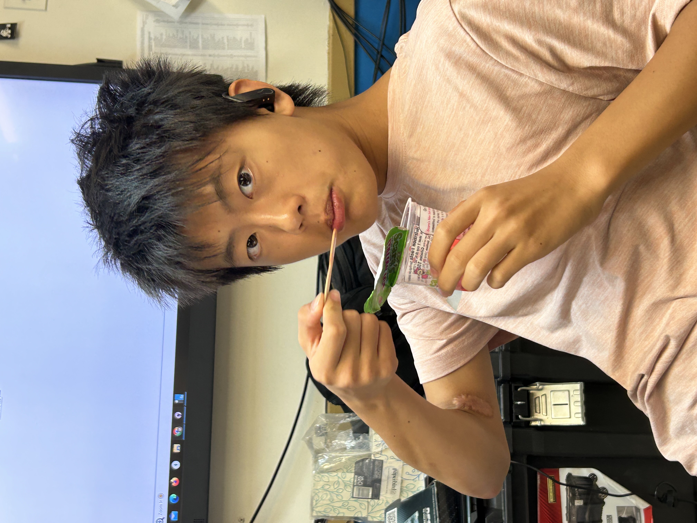

Deniz kirbiyik
Deniz Kirbiyik is a student at Staten Island Technical High School, often referred to as Staten Island Tech. As a high-achieving student at this prestigious school, Kirbiyik is involved in a rigorous academic environment known for its emphasis on STEM (Science, Technology, Engineering, and Mathematics) education. At Staten Island Tech, Kirbiyik is likely engaged in a challenging curriculum that includes advanced courses in mathematics, science, and technology. This environment fosters a strong foundation for future studies and careers in technical fields. Kirbiyik might be participating in various extracurricular activities, such as science fairs, coding clubs, or engineering projects, which are common at this school. Given the school's focus, Kirbiyik could also be involved in collaborative projects or internships that provide practical experience and deepen their understanding of STEM subjects. This hands-on experience is crucial for developing problem-solving skills and preparing for higher education or future careers in fields like computer science, engineering, or technology. As a student at Staten Island Tech, Deniz Kirbiyik is likely driven and passionate about their studies, aiming to leverage their education to make meaningful contributions in their chosen field. The picture below shows a hard working Deniz Kirbiyik at work. 
Alexander dong eating italian ice
ALexander eating ice ALexander eating ice ALexander eating ice ALexander eating ice ALexander eating ice ALexander eating ice ALexander eating ice ALexander eating ice ALexander eating ice ALexander eating ice ALexander eating ice ALexander eating ice ALexander eating ice ALexander eating ice ALexander eating ice ALexander eating ice ALexander eating ice ALexander eating ice ALexander eating ice ALexander eating ice ALexander eating ice ALexander eating ice ALexander eating ice ALexander eating ice ALexander eating ice ALexander eating ice ALexander eating ice ALexander eating ice ALexander eating ice ALexander eating ice ALexander eating ice ALexander eating ice ALexander eating ice ALexander eating ice ALexander eating ice ALexander eating ice 
Very blue dinosaUR
Deniz Kirbiyik is a student at Staten Island Technical High School, often referred to as Staten Island Tech. As a high-achieving student at this prestigious school, Kirbiyik is involved in a rigorous academic environment known for its emphasis on STEM (Science, Technology, Engineering, and Mathematics) education. At Staten Island Tech, Kirbiyik is likely engaged in a challenging curriculum that includes advanced courses in mathematics, science, and technology. This environment fosters a strong foundation for future studies and careers in technical fields. Kirbiyik might be participating in various extracurricular activities, such as science fairs, coding clubs, or engineering projects, which are common at this school. Given the school's focus, Kirbiyik could also be involved in collaborative projects or internships that provide practical experience and deepen their understanding of STEM subjects. This hands-on experience is crucial for developing problem-solving skills and preparing for higher education or future careers in fields like computer science, engineering, or technology. As a student at Staten Island Tech, Deniz Kirbiyik is likely driven and passionate about their studies, aiming to leverage their education to make meaningful contributions in their chosen field. The picture below shows a hard working Deniz Kirbiyik at work.